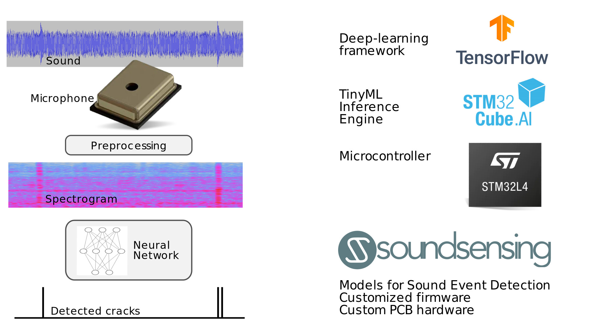

Perfect coffee roasting with TinyML sound sensing
Jon Nordby jon@soundsensing.no tinyML EMEA 2021
Roest

Roasting coffee

Doing it manually

Automatic First Crack Detection

Demo video
Summary
Benefits of fully automated roasting
- Operator can do other things while machine runs
- Improved consistency
- Works well regardless of operator skill level
Summary
- Acoustic detection of first crack
- Shipping on Roest coffee roasters since 2020
- Using TinyML solution developed by Soundsensing
Want to sense activities or monitor machinery using sound and machine learning?
contact@soundsensing.no
TinyML EMEA 2021: Perfect coffee roasting with TinyML sound sensing
Jon Nordby jon@soundsensing.no
Bonus
Bonus slides after this point
More resources
Machine Hearing. ML on Audio
Machine Learning for Embedded / IoT
Thesis Report & Code
Want the worlds best coffee roaster?
sales@roestcoffee.com